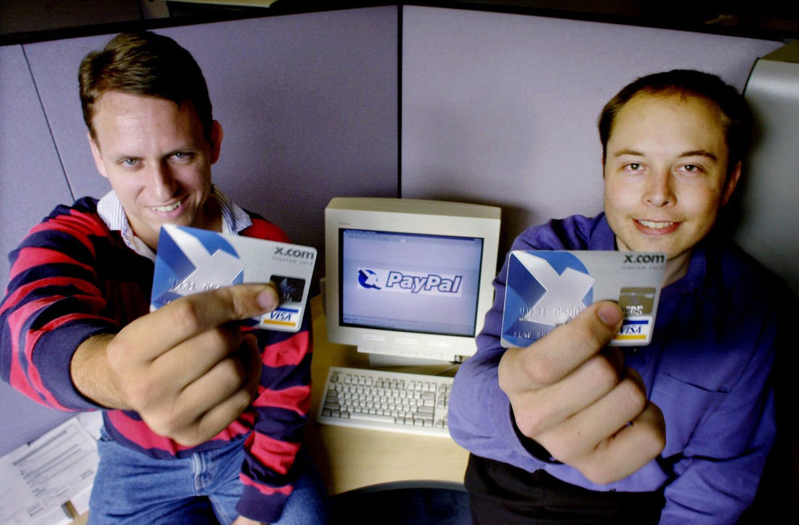

8 Curiosidades sobre Elon Musk
wikipédia Elon-Musk
Elon Musk é uma personalidade bizarra, controversa, excêntrica que causa muito no Twitter, que aliás agora pode fazer parte do seu portfólio, conheça oito curiosidades do fundador da SpaceX e CEO da Tesla.
há primeira curiosidade tem haver com algo que se popularizou no cinema no mundo dos cinemas nos últimos anos.
-
1 Elon Musk é fã de quadrinhos

E isso refletiu em algumas das escolhas curiosas que o magnata corporativo teve em sua vida.
Por exemplo, quando ele fundou a x.com um banco online que depois daria origem ao paypal.
E olha como era o cartão da empresa, teve aí fortes inspirações nos quadrinhos dos x-mens da Marvel e Musk confirmou que copiou o design dos x-mens na cara dura.
 -
2 curiosidade
Elon Musk não é o fundador da tesla, muita gente acha que musk foi o principal fundador da empresa, os fundadores são Martin Eberhard e Marc Tarpenning que fundaram a empresa dos anos 2000.

Eles tiveram a ideia inicial , procuraram investidores ,descobriram o que era necessário para fazer o negócio andar. Eberhart era apaixonado por carros esportivos e queria um carro nesse estilo , foi daí que surgiu a idéia de uma empresa de carros elétricos, Elon musk foi o quarto ceo da tesla, somente em 2008 que Elon assumiu o cargo.
Elon Musk foi um dos poucos a acreditar que carros elétricos poderiam ter alguma popularidade no futuro.
Ele colocou uma baita grana na empresa, assumiu o cargo de ceo e transformou a tesla na maior montadora de carros do mundo, e se tornou o principal nome quando a gente cita a tesla.
(A verdade é que existe uma briga gigante entre os fundadores e Elon musk na justiça para saber quem seria o fundador, e a justiça determinou que Elon musk seria considerado um dos fundadores da tesla, junto com JB Straubel que foi diretor de tecnologia e Ian Wright, um dos primeiros engenheiros da empresa, só que de fato o projeto idealizado por foi o Eberhard e Marc Tarpenning. )
-
3 A decisão
A próxima curiosidade é bacana pra quem é brasileiro, por que foi no Brasil que Elon Musk decidiu que investiria em foguetes, mais especificamente em Florianópolis / SC.
Durante uma entrevista com Peter Diamandis fundador da X Prize Foundation, Musk contou que durante uma visita ao Brasil tomou a decisão de criar a Space-X, durante a entrevista Musk também lembrou que seu colega Peter Diamandis tentou convencê-lo a não investir em foguetes Diamandis queria que Elon investisse na empresa dele, mas Elon claro não investiu.
-
4 maconheiro

É bastante evidente que Elon Musk tem uma gigantesca influência no mercado, tudo que ele diz ou faz tem uma enorme relação com ações de empresas na qual Elon pode ou não está ligado, principalmente no mercado de criptomoedas na qual ele parece gostar bastante de manipular.
Elon foi convidado para participar do podcast de Joe Rogan, e durante a entrevista Musk fumou maconha ao vivo, e não deu outra, as ações da Tesla despencaram na hora, dois executivos do alto escalão da tesla se demitiram, e a Space-x sofreu uma séries de inspeções da nasa para saber se a Space-X seguia regras rígidas. O próprio Musk disse estar arrependido de ter experimentado cannabis na frente de milhões de pessoas , e depois ele teve que se explicar internamente para seus funcionários além de claro se explicar para o público em geral. (“já pensou , um monte de empresários dando aquele tapa, porque Musk fez ao vivo”)
-
5 Elon Musk não nasceu pobre
É muito gente acha que o homem mais rico do mundo nasceu pobre, a verdade é que a família de Musk tinha grana, Errol Musk era um engenheiro muito bem sucedido e Maye Musk era modelo, mas nascer em uma família aparentemente bem sucedida, não quer dizer que você vai ser uma pessoa bem sucedida, a vida de Musk foi um tanto quanto difícil, seus pais se separam quando musk tinha 10 anos, Musk tinha um pai abusivo e sofria bullying na escola, segundo a biografia de Musk, certa vez vez ele apanhou tanto que chegou a desmaiar.
-
6 Musk também é um ator
Musk gosta de aparições públicas, tendo passado por diversos filmes, seriados e animações como no segundo filme do homem de ferro, no seriado de the big bang theory, e na animação Rick and Morty e diversas outras.
Elon Musk é um ponto tão fora da curva que ele faz participações nos filmes e séries onde o personagem é ele mesmo.
-
7 Jogo Blasta

Elon Musk projetou e criou um jogo conhecido como blasta com doze anos, depois de fazer um curso de programação que duraria 6 meses em 3 dias, o jogo foi comprado por uma empresa de games por 500 dólares
-
8 vencer ou vencer
essa oitava curiosidade é mais pra gente falar da perseverança de musk, talvez esteja entre a suas maiores virtudes,em 2008 Musk passou por uma fase extremamente difícil , A tesla sua montadora de carros elétricos estava a beira da falência, assim como sua empresa de foguetes a space-x, e além da crise financeira, Musk também estava em uma crise em seu relacionamento, entre salvar uma de sua empresas e deixar seu outros empreendimentos morrer Musk decide ir pro tudo ou nada, e investir sua grana restante entre as duas empresas.
finalmente musk consegue provar para nasa que sua empresa pode revolucionar a o envio de carga para o espaço